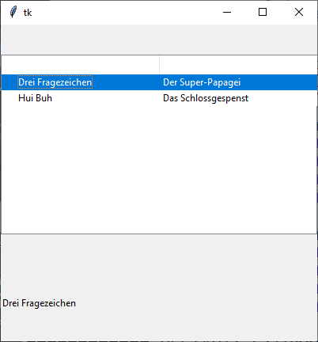
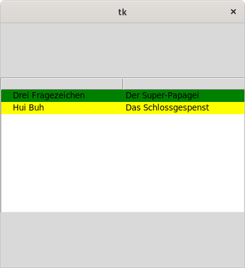

ttk.Treeview
Bei einerm Treeview handelt es sich um ein Widget, das ähnlich wie eine tk.Listbox Daten in Zeilen gruppiert.
Einzelne Zeilen können zugeordnete Unterabschnitte haben, die wiederum Zeilen sind und sich innerhalb des Widges aufklappen lassen und damit eine Baumansicht von Daten errmöglichen.
ttk.Treeview erzeugen
tv = ttk.Treeview(parent, Optionen)
Treeview kennt die Optionen:
| Optionsname | Beschreibung |
|---|---|
| columns | Liste von Spaltenbeschreibungen. Diese Spalten können Tupel von
Namen oder von Zahlen sein. Diese Namen oder Zahlen werden nicht als Spaltenkopf
eingetragen. Hinzu kommt immer die Spalte '#0', ohne, dass sie genannt
wird. |
| displaycolumns | Liste von Spalten (Nummern oder Namen), die in dieser
Reihenfolge angezeigt werden sollen. Darf '#all' (default) sein |
| height | Höhe der Treeview in Zeilen |
| selectmode | 'browse': Nur eine Zeile darf ausgewählt werden,
'extended': mehrere Zeilen können ausgewählt werden oder
'none': nichts darf ausgewählt werden |
| show | 'tree': Spaltenlabel in der speziellen Spalte
'#0', 'headings': Kopfzeile anzeigen. Beide Werte sind
voreingestellt gesetzt. |
ttk.Treeview kennt die Standardoptionen: class_, cursor, padding, style, takefocus, xscrollcommand und yscrollcommand
Das folgende Programm erzeugt eine Treeview mit drei Spalten: '#0' alias 'Hörspiel',
'Folge' und 'Nummer'. Die erste und mittlere Spalte dürfen sich ausdehnen, die
Texte in den Spaltenköpfen werden ausgerichtet. Ferner werden Daten eingefügt.:
import tkinter as tk
from tkinter import ttk
class A(tk.Tk):
def __init__(self):
super().__init__()
self.geometry('400x400')
self._createWidgets()
def _createWidgets(self):
tv = ttk.Treeview(self, columns=('Folge', 'Nummer'))
# Spalten
tv.column('#0', stretch=tk.YES, width=50)
tv.column('Folge', stretch=tk.YES, width=100)
tv.column('Nummer', stretch=tk.NO, width=50)
# Spaltenköpfe (Heading)
tv.heading('#0', anchor=tk.W, text='Hörspiel')
tv.heading('Folge', anchor=tk.CENTER, text='Folge')
tv.heading('Nummer', anchor=tk.E, text='Nummer der Folge')
# ins layout einfügen
tv.pack(fill=tk.X, expand=tk.YES)
# Daten hinzu
iid = tv.insert('', tk.END, text='???')
tv.insert(iid, tk.END, text='Drei Fragezeichen',
values=('Der Super-Papagei', '1'))
tv.insert(iid, tk.END, text='Drei Fragezeichen',
values=('Der Phantomsee', '2'))
tv.insert('', tk.END, text='Hui Buh',
values=('Das Schlossgespenst', 1))
if __name__ == '__main__':
window = A()
window.mainloop()Spaltenbezeichner
Spalten einer Treeview können auf verschiedene Weisen benannt werden:
- symbolische Namen wie "meine Spalte 1"
- numerisch, wie 1, 2, …
'#n', wobeindie N-te angezeigte Spalte ist (vgl. Optiondisplaycolumns- Es gibt immer eine Spalte mit der Bezeichnung
'#0'. Diese kann man nicht explizit erzeugen und nicht löschen. Diese enthält ein Label und gegebenfalls eine Markierung zum ausklappen von Unterabschnitten.
Itemoptionen
Zeilen innerhalb einer Treeview heißen Items, diese haben Optionen:
| Optionsname | Beschreibung |
|---|---|
| image | Bild in der Label-Spalte '#0' |
| open | True: Kindelemente sollen angezeigt werden, der Tree wird "ausgeklappt" |
| tags | Liste von Tags für das Item |
| text | Angezeigter Text in der Label-Spalte '#0' |
| values | Liste von Daten, für jede Spalte ein Element |
Tagoptionen
Tags können mit folgenden Optionen konfiguriert werden:
| Optionsname | Beschreibung |
|---|---|
| background | Hintergrundfarbe der Zeile |
| font | benutzer Font |
| foreground | Vordergrundfarbe |
| image | angezeigtes Bild |
Treeview-Methoden
Spaltenoptionen, wie von tv.column(…), … verwendet:
| Spaltenoption | Beschreibung |
|---|---|
| anchor | Spaltenausrichtung: tk.NE, tk.N, …, tk.CENTER |
| id | Spaltenname |
| minwidth | Min. Spaltenbreite, voreingestellt: 20 Pixel |
| stretch | 1: Spalte wird vergrößert, wenn Widget vergrößert wird, voreingestellt: 1. tk.YES und tk.NO funktionieren auch |
| width | Spaltenbreite zu beginn, voreingestellt ist 200 Pixel |
Spaltenkopfoptionen, wie von tv.heading(…) verwendet:
| Spaltenkopfoption | Beschreibung |
|---|---|
| anchor | Kopfausrichtung: tk.NE, tk.N, …, tk.CENTER |
| command | Callback, wird ausgeführt, wenn man auf den Spaltenkopf klickt |
| image | Bild im Spaltenkopf |
| text | Text im Spaltenkopf |
Methoden von ttk.Treeview():
| Methode | Parameter | Rückgabewert | Beschreibung |
|---|---|---|---|
| tv.bbox(item, column=None) | item: Item-iid, column: Spaltennummer oder -Beschreibung | Rechteck | Gibt das Rechteck um die Zelle mit angegebener Item-iid und Spalte zurück oder,
falls column fehlt, um die Zeile zurück. |
| tv.cget(Option) | Siehe Konfigurationsmethoden | ||
| tv.children(…) | Ersetzt durch tv.get_children(…) und tv.set_children(…) | ||
| tv.column(column, option=None, …) | column: Spaltennummer oder -Bezeichner,
Spalte 0 ist '#0'. option: Siehe Tabelle "Spaltenoptionen":
option=value |
Dictionary mit Spaltenoptionen, Wert der Option oder nichts | Setzt Spaltenoptionen oder liefert ein Dictionary mit Spaltenoptionen |
| tv.configure(…) | Siehe Konfigurationsmethoden | ||
| tv.delete(items) | items: Liste von Item-iids | - | Items werden gelöscht, ebenso die Child-Elemente der Items |
| tv.detach(items) | items: Liste von Item-iids | - | Items werden entfernt, aber nicht gelöscht, ebenso die Child-Elemente der Items.
Items können später wieder hinzugefügt werden, beispielsweise mit
tv.move(…) |
| tv.exists(iid) | iid: Item-iid | Boolean | True, wenn das Item existiert. Items existieren auch, wenn sie
mit tv.detach(…) entfernt wurden |
| tv.focus(iid) | iid: (optional) Item-iid | iid oder nichts | Legt den Fokus auf das Item. Ohne Argument liefert es die Item-iid des fokussierten Items |
| tv.get_children(item) | iid: (optional) Item-iid | Tupel von Item-iids | Gibt ein Tupel aller Child-Item-iids von item zurück.
Fehlt item, dann werden alle Toplevel-Elemente zurückgeliefert |
| tv.heading(column, option=value,…) | column: Spaltennummer oder -Bezeichner,
Spalte 0 ist '#0'. option: Siehe Tabelle "Spaltenkopfoptionen" |
Dictionary mit Spaltenkopfoptionen oder nichts | Setzt Spaltenkopfoptionen oder liefert ein Dictionary mit Spaltenkopfoptionen,
wenn option fehlt |
| tv.identify(component, x, y) | component: 'column' (s. identify_column(…)),
'element' (s. identif_element(…)),
'item': wie tv.identify_row(…)
'region' (s. tv.identify_region(…)),
'row' (s. tv.identify_row(…)),
x, y: Koordinate |
String | Liefert eine Beschreibung der angegebenen Position. Teilweise werden Item-IDs zurückgegeben. |
| tv.identify_column(x) | x: Koordinate | Spaltennummer in der Form '#n' |
Die Spalte, die die Koordinate enthält wird identifiziert und als String zurückgegeben. |
| tv.identify_element(x, y) | x, y: Koordinaten | Element (Zeile) | Beschreibung des Typs an der angegebenen Position, beispielsweise 'text' oder 'Treeitem.indicator'. |
| tv.identify_region(x, y) | x, y: Koordinaten |
String, beschreibt die Region | 'nothing': unbekannt,
'heading': Spaltenkopf, 'separator': Im Spaltenkopf
auf einem Separator, 'tree': In der Icon-Spalte ('#0'),
'cell': In einer Zeile, aber nicht der Icon-Spalte |
| tv.identify_row(y) | y: Koordinate | Item-iid | Gibt die Item-iid des Items (der Zeile) an der y-Position zurück |
| tv.index(iid) | iid: Item-iid | Index | Gibt den Item-Index relativ zum Parent-Element aus |
| tv.insert(parent, index, iid=None, optionen) | parent: Parent-iid oder leerer String für Toplevel,
index: Index unterhalb von parent, wenn schon Children existieren,
es kann 'end' benutzt werden.
iid: optionale selbstgewählte Item-iid für dieses Element. optionen: Key-Value aus
Tabelle "Itemoptionen". | Neue Item-iid oder der übergebene iid-Parameter | Fügt ein neues Element ein |
| tv.instate(…) | Siehe Sonstige Methoden | ||
| tv.item(iid, option…) | iid: Item-iid, option (optional): Key-Value aus Tabelle "Itemoptionen" | Nichts, Wert oder Dictionary | Fragt ab oder setzt Optionen eines Items |
| tv.move(iid, parent, index) | iid: Item-iid, parent: neuer Parent-Eintrag, index: Position
unterhalb von parent | - | Bewegt ein Item zu einer neuen Stelle unterhalb von parent |
| tv.next(iid) | iid: Item-iid | Item-iid oder leerer String | Nächstes Element auf gleicher Ebene relativ zu iid |
| tv.parent(iid) | iid: Item-iid | Item-iid oder leerer String | Gibt Parent-Element zurück |
| tv.prev(iid) | iid: Item-iid | Item-iid oder leerer String | Vorhergehendes Element auf gleicher Ebene relativ zu iid |
| tv.see(iid) | iid: Item-iid | - | Item wird sichtbar, es wird gescrollt und Elemente werden aufgeklappt |
| tv.selection(items) | iid: Item-iids (Einzeln oder Sequenz) | Sequenz | Liefert Tupel selektierter Items |
| tv.selection_add(items) | iid: Item-iids (Einzeln oder Sequenz) | - | Selektiert Item(s) (zusätzlich) |
| tv.selection_remove(items) | iid: Item-iids (Einzeln oder Sequenz) | - | Deselektiert Item(s) |
| tv.selection_set(items) | iid: Item-iids (Einzeln oder Sequenz) | - | Selektiert ausschließlich diese(s) Item(s) |
| tv.selection_toggle(items) | iid: Item-iids (Einzeln oder Sequenz) | - | Ändert den Auswahlzustand der/des angegebenen Items |
| tv.set(iid, column=None, value=None) | iid: Item-iid, column: Spaltennummer oder -Beschreibung, value: ein Wert für die Zelle | nichts, Wert oder Dictionary | ein Argument: Dictionary mit Spalte/Wert-Paaren, zwei Argumente: Daten der Zelle, drei Argumente: Zellenwert wird beschrieben |
| tv.state(…) | Siehe Sonstige Methoden | ||
| tv.set_children(item, newChildren) | item: Item-iid, newChildren: Sequenz von Item-iids | - | Es werden die Kinder von item ersetzt durch die angegebenen
Items newChildren |
| tv.tag_bind(tagName, sequence=None, callback=None) | tagName, sequence: <KeyPress> und <KeyRelease>
werden an das fokussierte Item gesendet,<ButtonPress>,
<ButtonRelease> und <Motion> an das Item unter der Maus.
Andere Events werden nicht unterstützt, callback | - | Bindet ein Event/Callback an einen Tag |
| tv.tag_configure(tagName, option…) | tagname: Name eines Tags, option (optional): key-value, siehe Tabelle "Tagoptionen" | nichts, Wert oder Dictionary | Setzt oder holt Optionen zu einem Tag. ein Argument: Dictionary mit allen Optionen, zwei Argumente: Wert zu einer Option, drei Argumente: Setzt Option |
| tv.tag_has(tagName, iid) | tagname: Name eines Tags, iid (optional): Item-iid | Liste oder Boolean | Ein Argument: Liste aller Items, die mit tagName gekennzeichnet sind,
zwei Argumente: True, wenn Item mit tagName gekennzeichnet ist |
| tv.xview(args) | command
der horizontalen Scrollbar wird mit dieser Metdode verbunden | ||
| tv.yview(args) | command
der vertikalen Scrollbar wird mit dieser Metdode verbunden | ||
Im folgenden Beispiel wird ein Mausklick-Ereignis an einen Tag gebunden, das angeklickte und aktive Element wird in einem Label angezeigt
: import tkinter as tk
from tkinter import ttk
class A(tk.Tk):
def __init__(self):
super().__init__()
self.geometry('400x400')
self._createWidgets()
def _createWidgets(self):
self.tv = ttk.Treeview(self, columns=('Folge', 'Nummer'))
self.tv.pack(fill=tk.X, expand=tk.YES)
# Daten hinzu
self.tv.insert('', tk.END, text='Drei Fragezeichen',
values=('Der Super-Papagei', '1'), tags=('hoerspiel',))
self.tv.insert('', tk.END, text='Hui Buh',
values=('Das Schlossgespenst', 1), tags=('hoerspiel',))
self.tv.tag_bind('hoerspiel', '<1>', callback=self._onClick)
self.tVar = tk.StringVar()
label = ttk.Label(self, textvariable=self.tVar)
label.pack(fill=tk.X, expand=tk.YES)
def _onClick(self, event):
text = ''
for selectedElem in self.tv.selection():
item = self.tv.item(selectedElem)
text += item['text'] + ' '
self.tVar.set(text)
if __name__ == '__main__':
window = A()
window.mainloop()Im folgenden Beispiel werden Tags farbig konfiguriert.
Hinweis: TK-Versionen vor 8.6.9 können Tags auf diese Weise nicht verändern.
import tkinter as tk
from tkinter import ttk
class A(tk.Tk):
def __init__(self):
super().__init__()
self.geometry('400x400')
self._createWidgets()
def _createWidgets(self):
self.tv = ttk.Treeview(self, columns=('Folge', 'Nummer'))
self.tv.pack(fill=tk.X, expand=tk.YES)
# Daten hinzu
self.tv.insert('', tk.END, text='Drei Fragezeichen',
values=('Der Super-Papagei', '1'), tags=('serie1',))
self.tv.insert('', tk.END, text='Hui Buh',
values=('Das Schlossgespenst', 1), tags=('serie2',))
self.tv.tag_configure('serie1', background='green')
self.tv.tag_configure('serie2', background='yellow')
if __name__ == '__main__':
window = A()
window.mainloop()Virtuelle Ereignisse
- <<TreeviewSelect>> -- Auswahlt wird geändert
- <<TreeviewOpen>> -- ein Tree wird geöffnet
- <<TreeviewClose>> -- ein Tree wird geschlossen